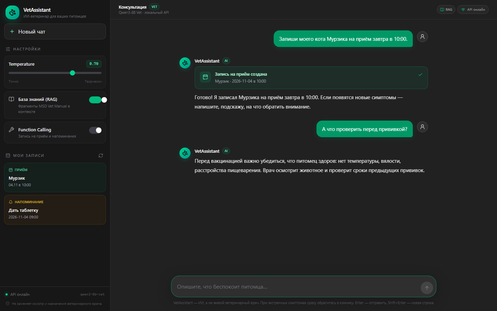

Ответы по базе знаний
RAG находит релевантные фрагменты MSD Vet Manual и использует их в ответе. База собирается из TXT и PDF, хранится в ChromaDB.
VetAssistant · v1.0.0 · production
Опишите симптом или задайте вопрос: ассистент опирается на MSD Vet Manual, помнит контекст беседы, ведёт записи на приём и напоминания. Модель работает на нашем сервере, без внешних LLM-API — данные питомца не уходят в сторонние сервисы.
Возможности
Опишите симптом или задайте вопрос: ассистент опирается на MSD Vet Manual, помнит контекст беседы, ведёт записи на приём и напоминания. Модель работает на нашем сервере, без внешних LLM-API — данные питомца не уходят в сторонние сервисы.
RAG находит релевантные фрагменты MSD Vet Manual и использует их в ответе. База собирается из TXT и PDF, хранится в ChromaDB.
Ассистент ведёт многошаговый диалог и учитывает историю: можно уточнять симптомы, возвращаться к предыдущим вопросам и сравнивать состояние питомца.
Попросите записать питомца — агентный цикл создаст запись с датой и временем и покажет её в боковой панели. Это запись внутри приложения, а не бронь в клинике.
Ассистент сохраняет напоминания о лекарствах и процедурах. Напоминания привязаны к пользователю и видны только ему.
Один ассистент в браузере и в Telegram-боте: общая история, стриминг ответов и те же агентные действия.
Промпт и safety-проверки удерживают модель от назначения опасных препаратов и дозировок. При тревожных симптомах ассистент направляет в клинику.
Архитектура
Qwen3-8B после QLoRA-дообучения работает на CPU через llama.cpp. RAG подключает MSD Vet Manual, а агентный цикл выполняет записи и напоминания — без внешних LLM-API.
Интерфейс
Реальные экраны продукта, снятые на локальном развёртывании. Клик — скриншот откроется в полном размере.

Статус
Ассистент работает в production: веб-интерфейс, Telegram-бот, JWT-авторизация, HTTPS и резервные копии. Регистрация закрыта — доступ выдаётся по запросу.
Приложение работает на ai-pets.ru. Регистрация закрыта — оставьте заявку, и мы откроем доступ. Если питомцу плохо, не ждите ответа ассистента: обратитесь в ветеринарную клинику.